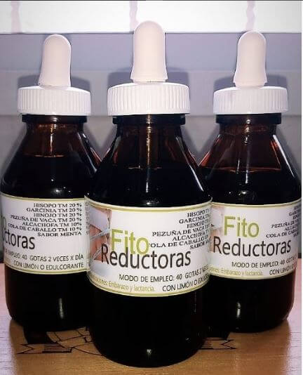

Nuestras Preparaciones
Homeopatía
Es un método terapéutico desarrollado por el Dr. Samuel Hahnemann, médico alemán de principios del siglo XIX, que restablece la salud, mediante la administración de medicamentos homeopáticos. Los principios básicos de la misma son: 1-Ley de Similitud, 2-Experiencia en Hombre Sano, 3-Dosis infinitesimales y 4-Remedio único (ésta última es característica de la Escuela Médica Unicista).
Los medicamentos homeopáticos se elaboran en nuestro país, en las Farmacias con Laboratorio Homeopático habilitado por la Autoridad Sanitaria, y se caracterizan por ser productos elaborados a partir de una o más cepas homeopáticas de origen vegetal, animal o mineral, mediante una técnica específica determinada en alguna Farmacopea Homeopática Oficial.
Nuestras Preparaciones
Flores de Bach
Creadas por el Dr. Edward Bach, quien concibió su uso basándose en la hipótesis de que las enfermedades son consecuencia de trastornos o desequilibrios de la dimensión emocional-mental de la personalidad. Son utilizadas en todo el mundo tanto en forma particular, como por médicos y profesionales de la medicina complementaria, psicoterapeutas, dentistas y veterinarios. El sistema está compuesto por 38 esencias florales, cada una está indicada para un estado emocional y/o mental específico, más fórmulas combinadas para afrontar situaciones especiales, difíciles o traumatizantes. No tienen ningún tipo de contraindicaciones y pueden ingerirse solas, o como complemento de cualquier otro tratamiento.
Están agrupadas en torno a diferentes áreas problemáticas, como ser: Temor, Incertidumbre, Falta de interés, Soledad, Hipersensibilidad a influencias externas, Abatimiento y Excesiva preocupación.
Fórmulas de Bach
Son combinaciones de varias esencias para fines específicos, entre las que se destaca el Remedio de Rescate (Rescue Remedy), un compuesto de cinco esencias florales puntuales para ayudar en caso de emergencias o mucho stress. También hay fórmulas para: Concentración, Aprendizaje, Ampliación de la conciencia, Adelgazante, Energizante, Llagas Bucales, Contracturas musculares, Rupturas sentimentales o Miedos.
Crema de Bach
Liviana, no grasa. Se usa para golpes, traumatismos, aspereza y sequedad de la piel, dermatitis, eczemas, alergias, quemaduras, esguinces y torceduras, paspaduras y contracturas entre otros.
Fórmulas para Niños
Desde un recién nacido hasta un niño en desarrollo pueden usar las Flores de Bach. Hay fórmulas especiales para: Celos, Problemas de sueño, Miedos, Incontinencia nocturna, Pérdidas, Timidez, Agresividad o Cambios de rutina.
Aplicaciones en Mascotas
Los animales tienen emociones y responden a cambios y situaciones estresantes. Hay fórmulas para: Agresividad, Traumas físicos y emocionales, Tristeza, Hiperactividad, Cambios, Época de celo, Viajes, Fatiga o Enfermedad.
Nuestras Preparaciones

Fitoterapia
Es la rama de la medicina que estudia la utilización de las plantas y sus derivados, con finalidad terapéutica, ya sea para prevenir, aliviar o curar un estado patológico. Desde la antigüedad, nuestros ancestros basaban su utilización en el conocimiento popular, pero desde hace varios años, se vienen realizando un gran número de investigaciones científicas para validar dichos postulados. Por tal motivo, muchos de los medicamentos utilizados en la actualidad, de origen vegetal, son considerados como tratamiento de primera línea en determinadas patologías, como por ejemplo, la hipertrofia prostática benigna (Serenoa repens y Pygeum africanum).
Farmacia Vignolo, le ofrece al cuerpo médico y por ende a sus pacientes, una amplia variedad de materias primas en base a plantas medicinales (hierbas, tinturas, extractos fluidos, extractos secos, extractos glicólicos, aceites, etc), para la elaboración de recetas magistrales en las diferentes formas farmacéuticas (comprimidos, cápsulas, jarabes, gotas, tisanas, geles, cremas, pomadas, óvulos).
Nuestras Preparaciones

Cosmética natural
Nuestro objetivo es promover el bienestar general de las personas, ofreciéndoles cosméticos de la más alta calidad, que atiendan las necesidades de todo tipo de pieles, sin producir alteraciones en su entorno, en armonía con la naturaleza. Para tal fin, Farmacia Vignolo tiene a disposición las mejores líneas de Cosmética natural, minuciosamente elegidas, cuyas materias primas deben proceder de plantas, y de ser posible de cultivos orgánicos certificados, no testeadas en animales, y que no contengan colorantes y fragancias sintéticas, ni derivados de petróleo, entre otras condiciones.
Nuestras Preparaciones

Recetas magistrales
Medicamento magistral: es todo medicamento prescripto en una receta magistral para un paciente individualizado, posteriormente preparado, envasado y rotulado por un farmacéutico en el laboratorio de su farmacia y dispensado en la misma (Farmacopea Argentina VII ed, Vol. III). Farmacia Vignolo, también cuenta con un laboratorio preparado para la elaboración de recetas magistrales en las diferentes formas farmacéuticas de uso interno y externo, cumpliendo las Buenas Prácticas de Preparación.
Nuestras Preparaciones
Medicina ortomolecular

El término ortomolecular, fue acuñado en 1968 por el científico norteamericano Linus Pauling (1901-1944), Premio Nobel de Química (1954) y de la Paz (1962). Es la terapéutica que consiste en el empleo de vitaminas, minerales, aminoácidos, oligoelementos y componentes fitoquímicos de plantas y alimentos, en cantidades suficientes u óptimas como para prevenir o tratar enfermedades, especialmente de curso crónico. La medicina ortomolecular considera que las enfermedades son producto de desequilibrios en el funcionamiento celular, corregibles mediante la administración de las moléculas nutritivas que normalmente están en el organismo, pero en la concentración justa o adecuada.
Farmacia Vignolo, cuenta con todas las materias primas necesarias, para poder satisfacer las prescripciones médicas relativas a este tipo de medicina, en todas sus formas farmacéuticas (excepto inyectables).
Nuestras Preparaciones
Suplementos dietarios

Como pensamos en la Salud y la Prevención, recordamos a Hipócrates, cuando expresó: “Que tu alimento sea tu medicina”. Por tal motivo, Farmacia Vignolo, te ofrece alimentos aptos para celíacos y diabéticos, así como también productos dietéticos y orgánicos, todos certificados.
Por otro lado, contamos con una amplia variedad de Suplementos dietarios de Laboratorios Nacionales e Importados (productos especialmente formulados y destinados a suplementar la incorporación de nutrientes en la dieta de personas sanas, que presentan necesidades dietarias básicas no satisfechas o mayores a las habituales. Contienen algunos de los siguientes nutrientes: proteínas, lípidos, aminoácidos, glúcidos o carbohidratos, vitaminas, minerales, fibra dietaria y hierbas).
Nuestras Preparaciones
Tratamiento del dolor

El tratamiento del dolor no es patrimonio de una profesión, sino que es un ejemplo concreto de la acción interdisciplinaria entre los profesionales de la salud.
El rol del farmacéutico es de inmensa importancia ya que además de elaborar las fórmulas magistrales y tener la guarda y control de los más variados analgésicos, es fundamentalmente el contacto con el paciente o familiar y eso le permite garantizar un tratamiento adecuado con la medicación correcta.
La integración del profesional farmacéutico en el equipo clínico de atención al paciente facilita la identificación de las deficiencias terapéuticas que pueden ser subsanadas con las fórmulas magistrales.
Nuestras Preparaciones
Ibuprofenato sódico

El Ibuprofenato sódico es la sal soluble de ibuprofeno de uso nebulizable para tratar las afecciones del área broncoalveolar.
La implementación de su uso como antiinflamatorio en forma nebulizable,está basada en evidencias de la mejoría inmediata que produce en la saturación de oxígeno en pacientes con dificultad respiratoria.
Tiene propiedades antinflamatorias, bactericidas y viricidas.
"El daño que produce el virus Sars-Cov2 (que genera la enfermedad Covid-19) es una inflamación -explica-. Como es un virus respiratorio se produce en el pulmón. Entonces se debe evitar dicha inflamación porque el paciente sufre de hipoxia al tener poca saturación de oxigeno".
Indiana Vignolo - Farmacéutica